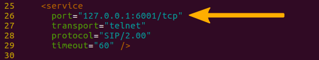
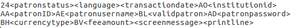
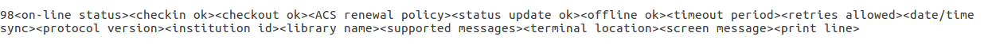

Other APIs and protocols
SIP2
SIP2 (Session Initiation Protocol) is a protocol for communication between devices.
In the context of Koha SIP2 is used for communication between Self Check (SC) machines i.e. self checkout machines, and the Automated Circulation System (also known as ACS which in this case is the server running Koha).
SIP2 communications consist of requests and responses.
The self checkout machines are ‘dumb’ and so they send requests to the Koha server which runs logic which determines a particular outcome which is sent as a response message back to the client self checkout machine, and this is then conveyed to the user.
警告
Security notice regarding using SIP2 service: To ensure that your SIP2 traffic is secure as it passes over the internet you need to make sure that you are using a VPN or stunnel.
Setting up SIP2
If you installed Koha using Debian packages then SIP2 setup is easy, simply follow these steps:
1. In your terminal (in the root Koha directory) write in: sudo koha-enable-sip <instancename>
2. Now you need to configure the SIP2 settings, to do this you need to edit the SIPconfig.xml file which exists in the /etc/koha/sites/<instancename>/ directory. You will need to edit this file as root because it contains passwords (to do so write ‘sudo’ at the start of your command).
e.g. sudo vi /etc/koha/sites/<instancename>/SIPconfig.xml
注解
Important note: There are three areas of interest in the SIPconfig.xml file that you need to change. These are: service, account and institution.
Service
2.1 Change the port value near the top of the SIPconfig.xml file (identified by the number 1 in the below screen shot), so it has the same IP address as set further down the SIPconfig.xml file identified by 2.
注解
Make sure the two port values don’t have the same port number as you cannot have the same port being listened to by two different services. When deciding upon the port number make sure it is a high number (i.e. above 1000) because all ports below 1000 require root permissions.

Account
The account(s) you define in the SIPconfig.xml file are simply account(s) permitted to use the SIP2 service i.e. you’re defining who can send and receive SIP2 commands.
警告
Account information that you write here must also exist in the Koha database i.e. you need to create a patron in the Koha staff interface with the same username, password (making sure to assign them circulate permissions) as the user account you write into the SIPconfig.xml file.
注解
It is highly recommended that you only write in Koha user accounts with circulate permissions.
The reason we want SIP2 users to only have circulate permissions rather than superlibrarian permissions is to reduce the access SIP2 users have to confidential patron data in case the system was compromised.
If the ACS or the SC were compromised then having all SIP2 users only having circulation permissions means that an intruder would only be able to access patron data via the terminal rather than the web interface as well (which would be available with superlibrarian permissions). So it is simply a matter of protecting your users.

Account value definitions:
Login id: This is the account username. - Modify this accordingly
Password: Account password - Modify this accordingly
Delimiter: The type of delimiter for account information - Leave as default
error-detect - Leave as default
Institution: This is the branchcode for the library that the user belongs to. NOTE: This institution needs to be defined further down in the institution area of the SIPconfig.xml file and it must also exist in the Koha database. i.e. you need to create a library with the same branchcode in Koha staff interface.
encoding: This is the standard used to encode the account data
Terminator: This needs to match the terminator value of the SIP2 server. - Modify this if you know the terminator value of the SIP2 server.
It is also possible to add custom patron attributes to SIP2 profiles using the format such as:
<patron_attribute field=”XX” code=”CODE1” /> <patron_attribute field=”XY” code=”CODE2” /> <patron_attribute field=”XZ” code=”CODE3” />
Institution
The institution information you define here must match a library created in the Koha staff interface.
警告
You need to make sure all the institutions that accounts are assigned to further up in the SIPconfig.xml file are also defined in the institution area of the same file.

Institution value definitions:
1. Institution id: The branchcode of the library. - Modify this accordingly. Must be the same as created in Koha and the account area.
Implementation: Defines the code that will be run. - Leave as default
3. Policy: Policy defines the permitted SIP2 commands allowed from SC’s in this institution. For example: renewal=”true” means that SC’s at that institution have permission to send renewal item SIP2 commands.
4. Starting SIP2 Simply write in the command: sudo koha-start-sip <instancename>
注解
Now you have a running SIP2 server.
Using SIP2
SIP2 is a communication protocol. The messages sent in SIP2 are either requests or responses. The SC’s send request messages to the ACS which will run some logic and send back the resulting value to the SC as a response message.
The request messages contain arguments, which are data values used by the ACS in its functions to perform the required task such as renewing items.
SIP2 commands
If you want to manually use/test SIP2 then you will be writing and receiving messages via the Linux terminal.
To be able to send and receive messages with the SIP2 server you need to use telnet to open a SIP2 connection. You need to specify the port number you want telnet to use.
To find this information look at the service area at the top of the SIPconfig.xml file (look for the port number as pointed out by the arrow in the below screenshot).

Write into the terminal
telnet localhost <portnumber>
e.g. telnet localhost 8023
Now write in the username and password set in one of the accounts in the SIPconfig.xml file.
Now you are connected to the SIP2 server you can start writing and sending request commands. The connection to the SIP2 server does time out fast so if haven’t finished writing and receiving commands simply write in:
telnet localhost <portnumber>
to restart the SIP2 connection.
SIP2 command syntax
Every SIP2 command has a 2 digit numerical prefix which defines what the command is doing.
e.g. To get information about a patron you start your command with the prefix: 63. The response from the server also has a corresponding numerical prefix.
Below is an example of a SIP2 request message to request patron information (in this example a Koha patron account with the user name ‘joe’, password ‘joes’, and card number ‘y76t5r43’ has been created in the Koha staff interface).
Additionally a library with the branchcode of ‘WEL’ has been created in the Koha staff interface and is also defined in the institution area of the SIPconfig.xml file):

So the format of this SIP2 request message is:

注解
The summary value is a 10 character value. If a Y is written in for the summary value then you will be able to get both a summary and more detailed informational output.
The value in the <YYYYMMDD> <HHMMSS> is the current datetime, by leaving a 4 space gap between the YYYYMMDD and HHMMSS this indicates you want to use local time rather than UTC.
注解
In this manual letter codes for the various fields are used where possible in describing the SIP2 message fields e.g. AO<institutionid>.
These letter codes can be written in the SIP2 commands into the Linux terminal, but make sure when substituting values in for the fields (values inside the <>) that you do not write in the <> brackets.
SIP2 messages:
Block patron
This uses the prefix 01 for request messages and 24 for response messages.
Request message:

注解
Card retained is a single character field of either ‘Y’ or ‘N’ which tells the ACS that a card has been retained by the self checkout machine.
Response message:

注解
<patronstatus> is a 14 character long value. The value Y in the string means true. Each position in this string (starting at 0) has a single corresponding value (Y or N) in the string.
e.g. a Y at position 1 (the second value in the string) means that the patrons renewal privileges are denied.
Check-in items
This uses the request message (messages sent to the ACS) prefix of 09 and the response prefix of 10 (sent to the SC).
Request message:

注解
<no block (Offline)> is a single character field of either ‘Y’ or ‘N’ which indicates if the transaction is being performed offline. As offline transactions are not supported you need to write ‘N’ if you are testing this message out manually.
<transactiondate> this is a 18 character field with the date is the format: YYYYMMDDZZZZHHMMSS.
ZZZZ is the timezone, if you want to set it to local you need to leave 4 blank spaces, but if you want to set it to the UTC (Coordinated Universal Time) then you need to write in 3 blank spaces and a Z.
Response message:
注解
Alert type could have one of several values: 00 : Unknown 01: local hold 02: remote hold 03: ILL Transfer 04: transfer 99: Other
If an item is resensitized then the value of <resensitize> should be Y otherwise it should be N. Rensensitizing items is done to ensure that if someone tries to steal the item they are detected.
Checkout items
This uses the request message prefix of 11 and the response message prefix of 12. It has similar syntax to the check-in command, outlined above except the prefixes are different.
Hold – May not yet be supported on some systems. This has a request message numerical prefix of 15 and a response message prefix of 16.
Request message:

注解
<holdmode> is a single character value. + means add a hold, - means delete a hold and * means change a hold.
Response message:

注解
<ok> is a single length value which is either 0 (for hold is not permitted or was not successful) or 1 (for hold is permitted and was successful).
<available> is a single length value which is either Y or N. Y means the item is currently in the library, whilst N means the item is currently on loan/someone else has created a hold on the item.
Item information: This uses the request command prefix of 17, and the response command prefix of 18
Request message:

注解
See the check-in items command (described above) to find out what the <xact_date> value is.
The terminal password is optional.
Response message:

Item status update This uses the request message prefix of 19 and the response message prefix of 20
Request message:

注解
<itemproperties> is not a fixed length value, and you can optionally write in values such as item size and these values will be stored in the Koha database for the item.
Response message:

注解
<itempropertiesok> is a single length character value which is either 0 or 1. 1 identifies that the <itemproperties> value defined in the item status update request message was successfully stored in the Koha database.
Patron status
This uses the request message prefix 23 and the response message prefix of 24.
Request message:

Response message:

注解
The value displayed for <patronvalidity> is Y (valid) and N (invalid) The value in the <YYYYMMDD> < HHMMSS> is the current date/time.
The reason for the gap between the two values is to define that you want to use localtime rather than UTC.
Patron enable - This is not yet supported. This uses the request message prefix of 25 and the response message prefix of 26
注解
This command undoes the block patron command.
Request message:

Response message:
Renew This uses the request message prefix of 29 and the response message prefix of 30
Request message:

注解
<thirdpartyallowed> is a single character value which is either Y or N. If it is Y then third parties can renew items.
<noblock> is a single character value which is either Y or N. If it is Y then this means that the item was checkin/out when the ACS was offline.
<nbduedate> is the transaction date of checkin/checkout when the ACS was offline.
<feeacknowledged> is a single character value which is either Y or N. This indicates if the user accepts the fee associated with the item they are renewing.
Response message:

注解
<ok> is a single character value which is either 0 or 1. A value of 1 means the item was successfully renewed, 0 means item was not successfully renewed.
<renewalok> is a single character value which is either Y or N. The logic for the setting of the value of <renewalok> is Y is set when the item is already checkout by the user and so it should be desensitized thereby renewing it, whereas N is set if the item is not already checkout to the patron and so it should not be renewed.
In other words don’t let patrons renew books when they are not currently checked out to them.
<magneticmedia> is a single character value which is either Y (for yes), N ( for no), or U (for unknown).
<mediatype> is a three numerical character long value. For a list of the values go to: http://multimedia.3m.com/mws/media/355361O/sip2-protocol.pdf
End session
This uses the request message prefix of 35 and the response message prefix of 36
Request message:

Response message:
注解
<success_or_failure> is either Y for success or N for failure.
Fee Paid – May not be implemented yet. This uses a request message prefix of 37 and a response message prefix of 38
Request message:

注解
<feetype> is a two numerical character value which is between 01 and 99. To see a list of fee type values go to http://multimedia.3m.com/mws/media/355361O/sip2-protocol.pdf
<paymenttype> is a two character numerical value between 00 and 99. 00 is cash, 01 is Visa, and 02 is credit card.
<currencytype> is a 3 alphanumeric character long value identifying the currency the fee paid was in.
Response message:
注解
<paymentaccepted> is a single alphanumeric character long value which is either Y (payment has been accepted) or N (payment has not been accepted).
Patron information
This uses the request message prefix of 63 and the response message prefix of 64
Request message:

Response message:
注解
<valid patron> is Y for valid and N for not valid.
注解
<hold itemcount><overdueitemcount><chargeditemscount><fienitemscount><recallitemscount><unavaliableholdscount> are all 4 numerical character long values.
Renew all
This uses the request message prefix of 65 and the response message prefix of 66.
Request message:

Response message:

注解
<renewedcount> is a 4 numerical character long value denoting the number of items that were renewed.
<unrenewedcount>, has the same format as the <renewedcount> but it denotes the number of items not renewed.
Login
This uses the request message prefix of 93, and the response message prefix of 94.
Request message:

注解
<UIDalgorithm> and <PWDalgorithm> are one character long values indicating the type of algorithm to use to encrypt the loginuserid and loginpassword respectively.
Writing in the value of 0 means these values will not be encrypted.
Response message: 941 is a successful login. 940 is an unsuccessful login [connection closed by foreign host.] is a unsuccessful login
Resend
This requests the receiving device to resend its last message.
SC -> ACS resend request is 97
ACS -> SC resend request is 96
Status of the ACS and SC
This has the request message prefix of 99 and the response message prefix of 98.
Request message:

注解
The status code is one of 3 values. * 0: SC is ok * 1: SC is out of paper * 2: SC is shutting down max print width is a 3 character long value which is the integer number of characters the client can print Protocol version is a 4 character value in the format x.xx
Response message:

注解
If you get the response message ‘96’ this means that the request message is not valid/understood.
Troubleshooting SIP2
Can’t connect to remote host when writing in the command telnet localhost <portnumber>
3 solutions for this issue to try are:
Check the portnumber your writing in the above command is the port number written in the SIPconfig.xml file at the location indicated by the number 1. i.e. in the below example because the portnumber is 6001 the correct command would be: telnet localhost 6001.
Check if any userid is written more than once in the SIPconfig.xml file. The userid (which is simply the username of the Koha user) needs to be unique within the SIPconfig.xml file. If you have the same userid multiple times in your SIPconfig.xml file this will cause the connection to SIP2 to fail before you get a chance to authenticate.
Check the account defined in the SIPconfig.xml file also exists in the Koha database with the same username, password and has circulate permissions. If you have dropped and recreated the Koha database after creating the patron account in the Koha staff interface and the SIPconfig.xml file then that patron account will not exist in the Koha database and so you will need to recreate them in the Koha staff interface.
To access the SIP2 logs in your Koha home directory navigate to the following directory: /var/log/koha/<instancename>
Then view the output of the sip-error.log and the sip-output.log files which give more detailed information about the SIP2 error.
cat sip-error.log
cat sip-output.log
Useful links on SIP2 commands:
http://multimedia.3m.com/mws/media/355361O/sip2-protocol.pdf
LDAP
Setting up LDAP (Lightweight Directory Access Protocol) for Koha allows you to store all user information in a central database which is accessed both by your organisation’s Koha instance and for users to authenticate on other existing systems.
LDAP is a protocol used for file discovery over networks and network authentication.
LDAP configurations are powerful allowing you to customise how Koha and LDAP interact. LDAP can be configured so that new accounts created in LDAP can be synced down into the Koha database, additionally updates to the LDAP user account are synced down to the Koha database.
However Koha cannot sync data up to the LDAP server, thus the data traffic when using LDAP is only one directional.
Auth_By_Bind is set to 1 where a Microsoft Windows Active Directory system is in use in the LDAP database.
Before going through the steps to configure LDAP you will need the following information/actions from the organisation
The organisation will need to open a port to allow access to their AD from the server.
Information on the access to the AD server (IP address/hostname, port, SSL info)
Information on the configuration of the AD server (relevant OUs, DCs, CN formats relative to usernames)
Mapping between AD fields and Koha fields, including defaults
Default values for things not provided by AD (categorycode, branchcode for example)
To authenticate a user do we bind as them (seems to be common for AD) or do we use an account and login with that and then check? If the latter, we’ll need details of how to log in
Do the existing usernames in Koha match the usernames that we’ll be using to look them up in AD? If so, good. If not, how will we deal with duplicate users?
Steps to set up LDAP with your Koha instance
1 In Linux terminal navigate to the directory containing the koha-conf.xml file which will either be in: * /etc/koha/sites/<instance-name>/ OR * /etc/koha/
2 Open the koha-conf.xml file with root permissions: sudo vi koha-conf.xml
3 Scroll down to the line containing ‘<useldapserver>0</useldapserver>’ and change it to: <useldapserver>1</useldapserver>
4 Then in the next line below write in the LDAP configurations below: Note all fields highlighted in yellow need to be replaced with the appropriate values for your organisations LDAP server.
<ldapserver id="<ldapserverid>">
<hostname><hostname></hostname>
<base>dc=<domaincontroller>,dc=<domaincontroller></base>
<user>cn=<nameofuser>, dc=<domaincontroller>,dc=<domaincontroller></user> <!--This is the username of user account with permissions to query the LDAP server -->
<pass><password></pass> <!-- This is password of the user account with permissions to query the LDAP server-->
<replicate><either0or1></replicate> <!-- add new users from LDAP to Koha database -->
<update><either0or1></update> <!-- update existing users in Koha database -->
<auth_by_bind><either0or1></auth_by_bind> <!-- set to 1 to authenticate by binding instead of password comparison, e.g., to use Active Directory -->
<principal_name><principalname></principal_name> <!-- optional, for auth_by_bind: a printf format to make userPrincipalName from koha userid -->
<mapping> <!-- match koha SQL field names to your LDAP record field names-->
<firstname is="givenname"></firstname>
<surname is="sn"></surname>
<address is="postaladdress"></address>
<city is="l">Athens, OH</city> <!-- Athens,OH is the default value for
city of all users logging into Koha -->
<zipcode is="postalcode"></zipcode>
<branchcode is="branch">Central</branchcode>
<userid is="uid"></userid>
<password is="userpassword"></password>
<email is="mail"></email>
<categorycode is="employeetype">EM</categorycode>
<phone is="telephonenumber"></phone>
</mapping>
</ldapserver>
5 Save and exit the koha-conf.xml file
6 Check the LDAP connection works by writing in:
ldapsearch -H ldaps://host.name -s base -x -w “” -d 1
注解
Note about hostname Hostname can either be a alphanumerical name or it can be the LDAP server IP address (its optional to write port number). By default the ldaps default port number is 636, whilst ldap default port number is 389
注解
Note about the replicate and update fields The replicate LDAP config field for LDAP in the koha-conf.xml file allow the Koha database to be added to with a new borrower account whenever a user logs into Koha (either the staff client or OPAC) with their LDAP username and password (assuming the same username and password does not already exist in the Koha database).
Whereas the update LDAP config field (in the same file allows) allows for user information in the LDAP database to be synced down to the Koha database. e.g. if someone gets married and their surname changes then the new surname only needs to be updated in the existing LDAP database and that will be synced down to the Koha database automatically if the update configuration is set to 1.
About the mapping fields (the fields highlighted green) <city is=”l”>Athens, OH</city>
The left hand column name (highlighted yellow) is the name of the column in the LDAP database.
The column name inside quote marks (highlighted pink) is the name of the column in the Koha database. NOTE: This can be filled with any value if there is no equivalent column name in the Koha database as exists in the LDAP database.
The value highlighted cyan is the default value for the specified Koha and LDAP columns. So in the above example all user records in the Koha and LDAP databases will by default have the city value of ‘Athens, OH’.
Example of the LDAP configurations:
<useldapserver>1</useldapserver><!-- see C4::Auth_with_ldap for extra configs you must add if you want to turn this on -->
<ldapserver id="ldapserver" listenref="ldapserver">
<hostname>ldaps://example.co.au</hostname>
<base>ou=employees,dc=companya,dc=com,dc=au</base>
<user></user> <!-- DN, if not anonymous -->
<pass></pass> <!-- password, if not anonymous -->
<auth_by_bind>1</auth_by_bind>
<replicate>1</replicate> <!-- add new users from LDAP to Koha database -->
<update>0</update> <!-- update existing users in Koha database -->
<principal_name>ou=employees,dc=companya,dc=com,dc=au</principal_name>
<mapping>
<userid is="uid" ></userid>
<cardnumber is="uid" ></cardnumber>
<email is="mail" ></email>
<surname is="sn" ></surname>
<firstname is="givenname" ></firstname>
<categorycode is="1">EM</categorycode>
<branchcode is="1">SYD</branchcode>
</mapping>
</ldapserver>
The values in the mapping area are not always the same, and it depends on what is in your organisations LDAP database. For example some organisations do not use <userid> instead each user is only identified by the <email> field and so no <userid> is written.
Troubleshooting LDAP
The log that LDAP errors are printed to depends on several factors:
If plack is not disabled then LDAP errors are displayed in the plack-error.log file If plack is disabled then the location that LDAP errors are printed to is either the opac-error.log file (if the user is logging into the OPAC) or the intranet-error.log file (if the user is logging into the staff client) All of these three log files are accessible in the following directory:
/var/log/koha/<instance>/